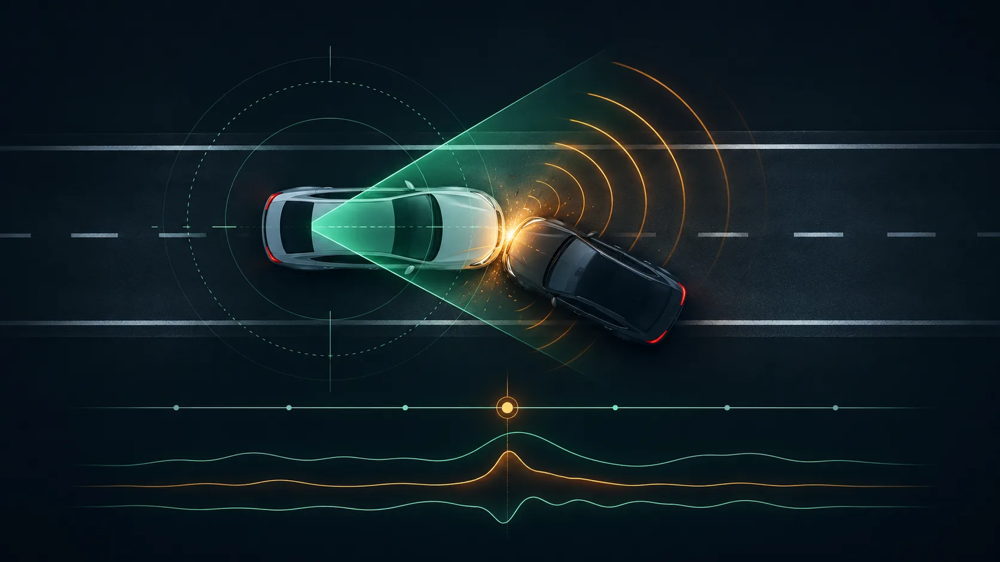
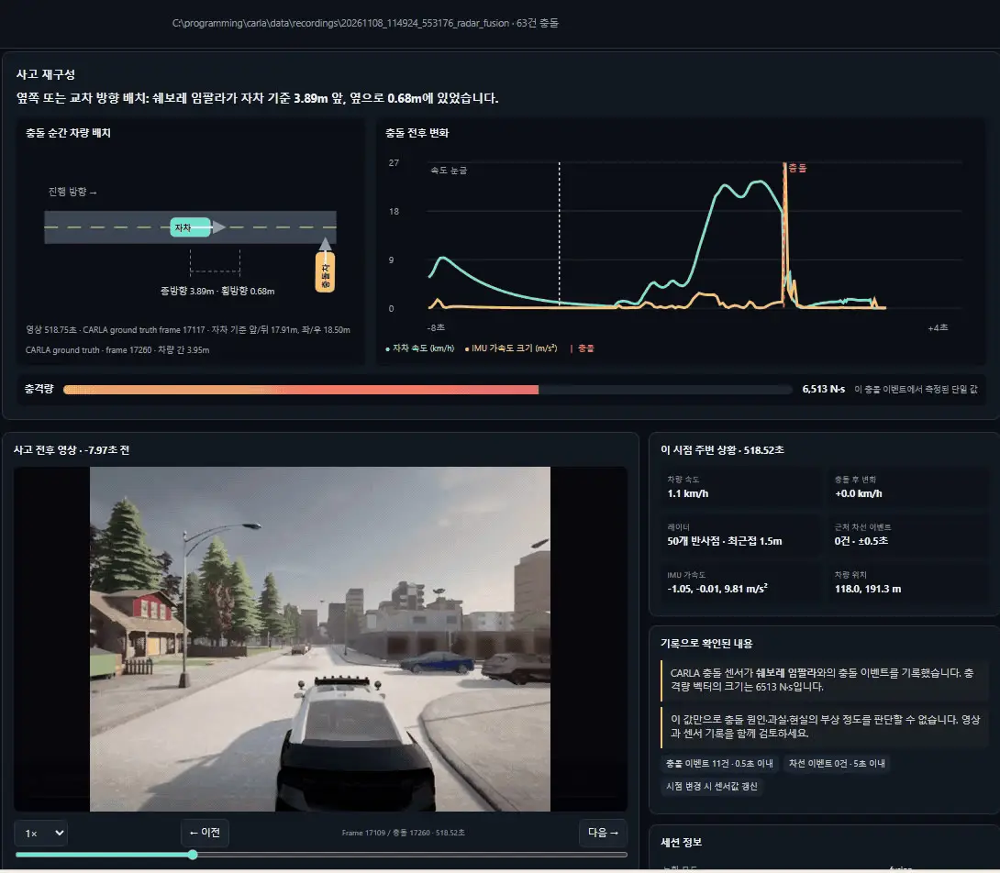

01 / FIND
Browse recorded incidents
Discover CARLA sessions and collision events, then narrow the list by weather or available video.
A focused accident-review dashboard built on DriveFusion. It brings CARLA collision clips, vehicle and sensor signals, a spatial reconstruction, and an evidence-grounded LLM summary into one review flow.

The dashboard keeps the event clip, reconstructed vehicle positions, sensor changes, and session context together so a reviewer can move from a collision entry to its supporting records.

Designed to make recorded simulation incidents easier to inspect, while keeping measured values distinct from visual interpolation and LLM-generated narrative.
Discover CARLA sessions and collision events, then narrow the list by weather or available video.
Play the camera clip from roughly eight seconds before to four seconds after impact, with speed controls and timeline seeking.
Use CARLA position records to draw the vehicles around the ego car. Between recorded samples, motion is interpolated for display.
Inspect speed and IMU graphs alongside camera, radar, lane, vehicle, and collision events on a shared timeline.
Send representative still frames and a compact sensor summary for a readable, cached incident narrative.
Video previews and LLM results are cached with the local recording session, alongside the original CARLA files.
The dashboard is a separate local web interface beside the existing Qt measurement screen. It uses the saved DriveFusion/CARLA data instead of replacing the real-time pipeline.
When available, still frames near −3 seconds, impact, and +2 seconds, together with a compact summary of recorded vehicle and sensor signals. The full video is not sent to the model.
A readable description grounded in the selected simulation evidence. It can help organize a review; it does not establish real-world cause, fault, or injury severity.
The dashboard reads recordings from the machine running it, so 127.0.0.1:8765 is intentionally a local address. Visitors can inspect this page and the source; to use the dashboard, run DriveFusion locally with their own CARLA recordings and API key.
OPENAI_API_KEY in the project’s local .env file. Never publish the key or expose this local server as a public service.# From the DriveFusion project root .\.venv\Scripts\python.exe -m monitor.accident.app --recordings data/recordings # Open in a browser on the same PC http://127.0.0.1:8765 # Optional local .env settings OPENAI_API_KEY=your-api-key OPENAI_MODEL=gpt-6-luna
Python’s standard library serves the page; FFmpeg is needed to create incident clips. LLM summaries require network access and a valid API key.
Open accident-review source ↗This interface reviews recorded CARLA simulation events. Ground-truth positions support the spatial reconstruction and evaluation; interpolated positions are visual estimates between samples. LLM output is an evidence summary, not a determination of collision causality, legal fault, or physical injury.